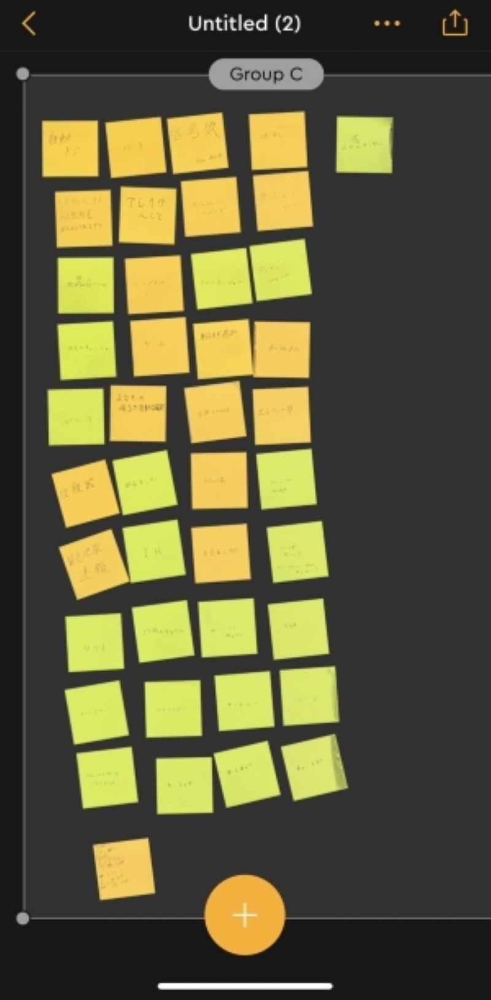
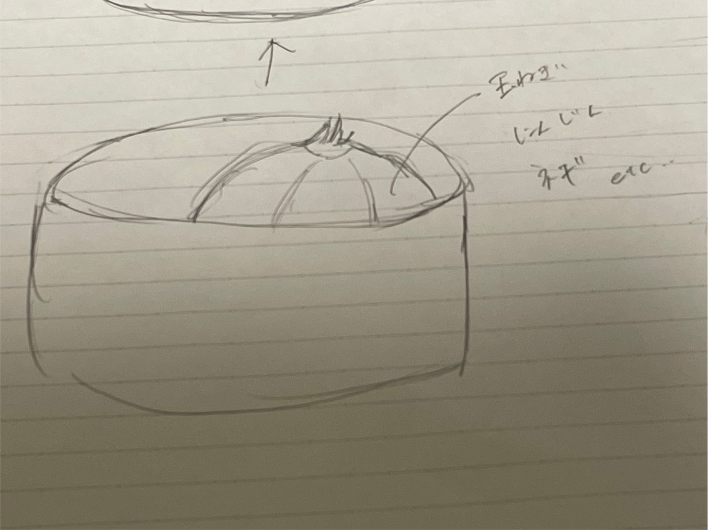
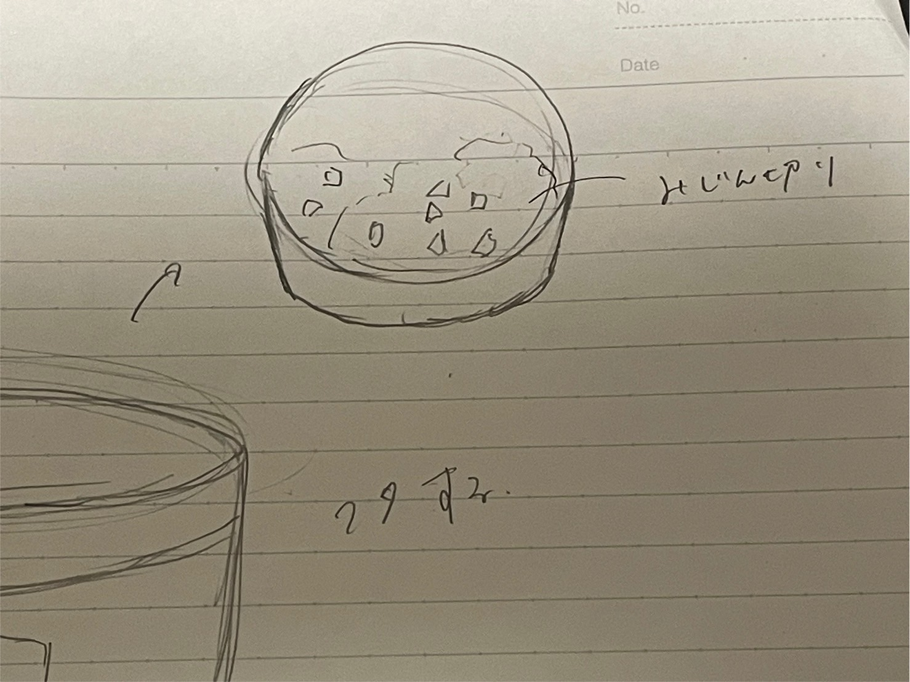
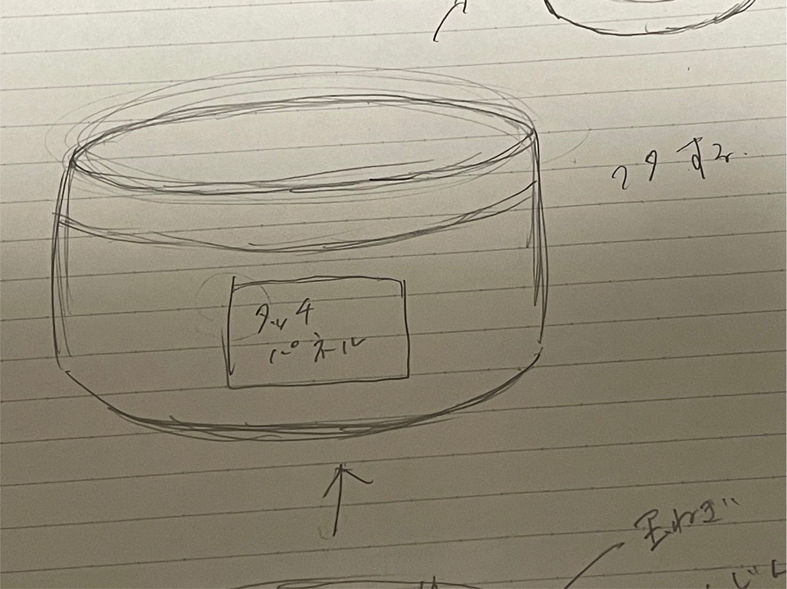

・信号機
・自動ドア
・Bluetooth接続ペンライト
・学校のチャイム
・空調管理エアコン
・お掃除ロボット
・ネットの診断テスト
・車のナビゲーションシステム
・スマホのタイマーのスヌーズ機能ect..
2.イルミネーション
冬に街や遊園地を彩るイルミネーションや東京タワーやスカイツリーのライトアップなどの灯り。
光る色の順番が何通りか設定されており、それぞれの色が何秒間点灯して
次の色が何秒間点灯するのかプログラミングされていてそれが繰り返されている。
3.プログラミングでできそうなこと
料理する時に使う

まず切りたい食材を機械に入れる。
この場合は玉ねぎ。

食材の切り方が機械にプログラミングしておく。
機械のタッチパネルで食材をどんな切り方にするか選択する。
この場合はみじん切り。

みじん切りが完成している（^^）♪
料理をする時は食材を切ったりゆでたりいためたり混ぜたり
いろんなこと同時並行で進めなければならないので、私のように同時並行が苦手な人間は
失敗することも多いことでしょう。。そして料理にこだわりを持たせたかったら
食材の切り方一つにもこだわりたいと思うし、それによって美味しさもかわることもあります。
食材の切り方はいちょう切り、薄切り、角切り、飾り切り、
くし形切り、小口切り、短冊切り、乱切りなど沢山の種類があります。
同時並行が苦手な人は切る行為は機械に任せて他の作業に集中出来ます。
あとは切り終えた食材を焼くなり煮るなりするだけです♪
少ない作業に集中できるのでおのずと料理成功率も上がること間違いナシ❣